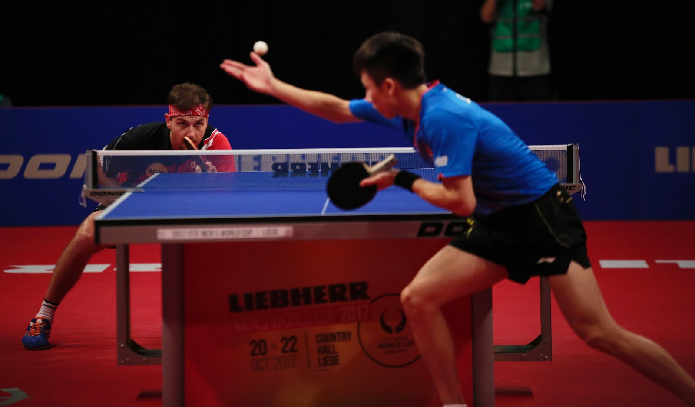

Ma Long: The Greatest of All Time (GOAT)

"The Captain of the Chinese National Team and the only male Double Grand Slam winner."
Technical Profile
- Play Style
- Two-winged shakehand attack, famous for the most powerful forehand loop in history.
- The Blade
- Hurricane Long 5 (DHS), optimized for speed and spin consistency.
- Nickname
- The Dragon (Lóng) or The Dictator, for his dominance on the world stage.
Tournament Dominance
Olympic & World Cup Gold Medal Count
| Event |
Singles Gold |
Team Gold |
Total Career Titles |
| Olympics |
2 (Rio, Tokyo) |
3 |
5 Gold Medals |
| World Championships |
3 |
9 |
12 Gold Medals |
Match Point Simulation
Current Match View:

Listen to the speed of the rally. Click the button to return the serve!
Ma Long is an icon of the ITTF.
Reference: ITTF Hall of Fame Records